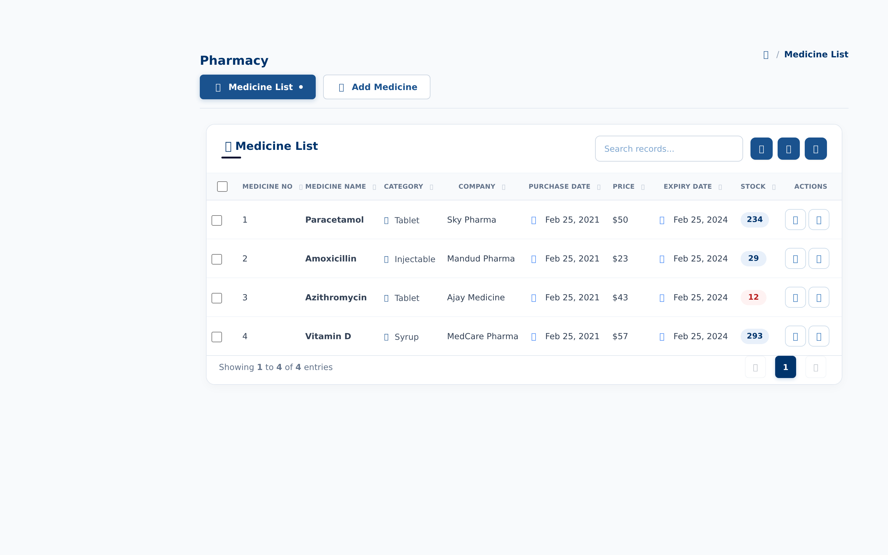
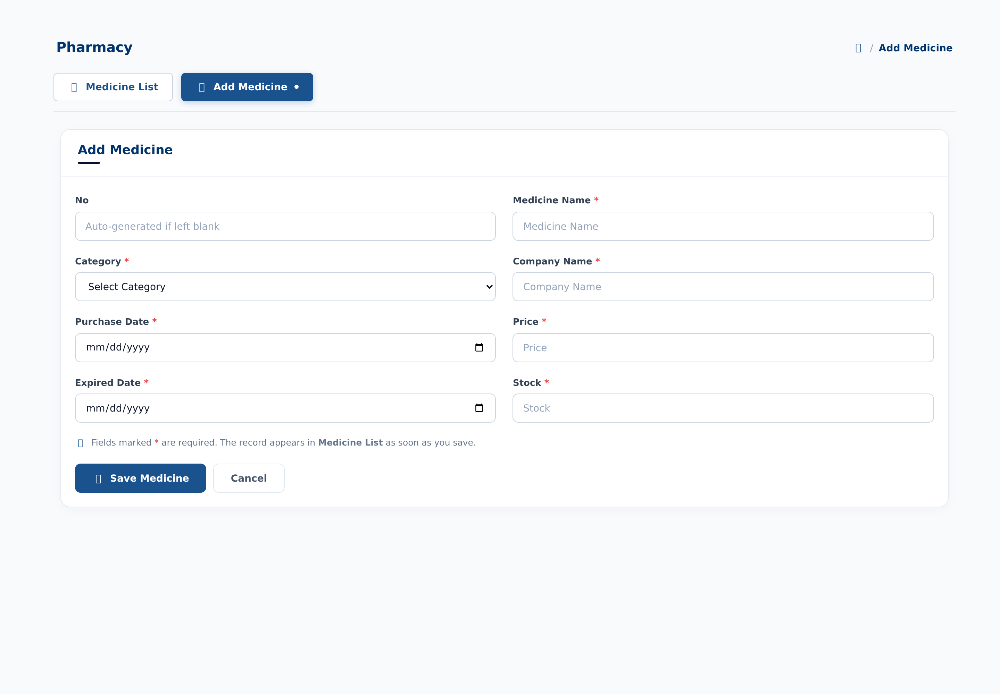
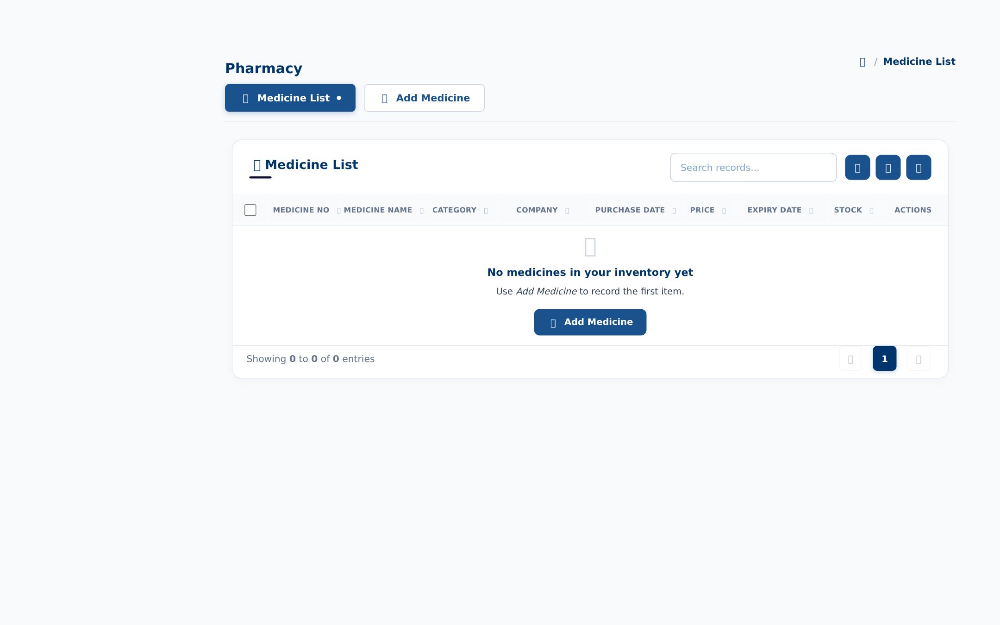
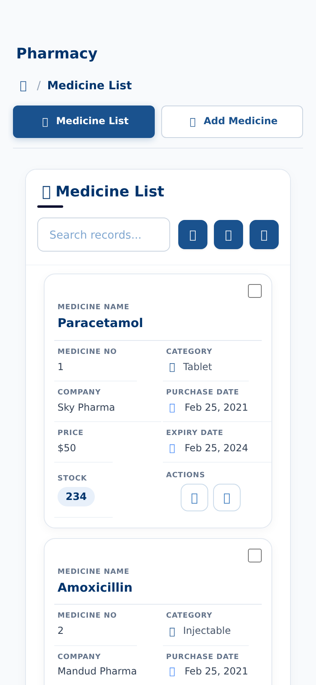
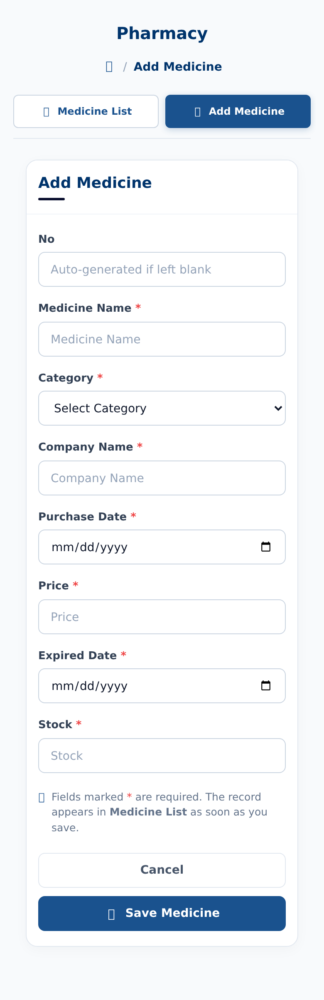
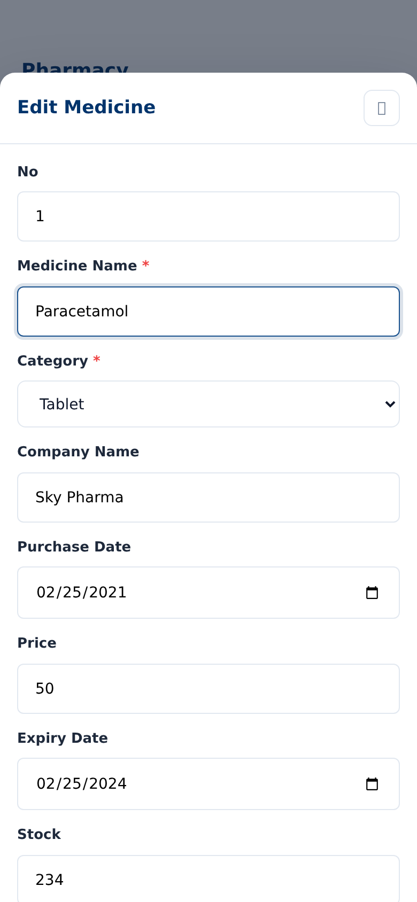
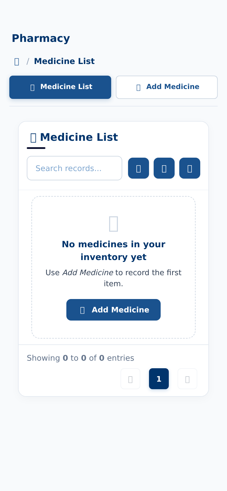

Task 4: toolbar actions ko real banaya, "Add Medicine" ka matlab clear kiya, aur dono pages mobile par responsive kiye. Sab kuch existing dashboard tokens par — koi naya theme nahi.
| Control | Pehle | Ab |
|---|---|---|
| Trash (toolbar) | dead for data Checkbox select karke confirm bhi hota tha, par sirf DOM row hatti thi — reload par wapas. Koi bhi medicine DB me save hi nahi hoti thi. | working Selected IDs dior_doc_medicine_bulk_delete par
jaate hain, success ke baad row + pagination refresh. |
| Export | dead Koi handler nahi tha — click par kuch nahi. | working CSV download (Excel-friendly BOM), file name
medicine-list-YYYY-MM-DD.csv. |
| Refresh | dead Koi handler nahi tha. | working Table server se dobara padhta hai, icon spin karta hai, spinner ke saath button disabled. |
| Edit / Delete (row) | wrong modal Generic static-table layer ne sirf text inputs wala modal khola (Category/Dates/Price/Stock edit hi nahi ho sakte the) aur delete sirf DOM se row hatata tha. | working Pharmacy ka apna field-accurate modal (select + date + number inputs) aur AJAX delete. |
| "Add Medicine" subtab | confusing Dono pills bilkul same solid blue
(.dior-subtab-pill aur .active — same background), isliye current page
pata hi nahi chalta tha. Neeche form ka button disabled (#94a3b8,
not-allowed) tha, inputs me na name na id, koi submit
handler nahi, Cancel bhi dead. |
working Outline vs. filled pills + active dot; form me labels,
name, required, inline errors, Save/Cancel dono kaam karte hain aur
save hone par list me row add hoti hai. |
Medicine List — desktop

Add Medicine — desktop

Empty state (naya)

Medicine List — rows become cards

Add Medicine — single column

Edit — bottom sheet

Empty state — mobile

16px font se (iOS focus-zoom nahi hota).96vh max height + scroll.documentElement.scrollWidth === 390 — koi horizontal overflow nahi; 768px
aur 1440px par bhi verified.| File | Role |
|---|---|
templates/doctor-tabs/pharmacy.php |
Ab PHP-driven: list Dior_Doctor_Dynamic::render_medicines() se aati hai, form me
proper labels/names, empty state, nonce field. |
assets/js/dior-pharmacy.js (naya) |
Add/edit/delete/bulk-delete/export/refresh. Nonce + credentials:'same-origin';
backend na ho to clear error toast (silent fake save nahi). |
includes/class-dior-doctor-dynamic.php |
Naya table wp_dior_medicines + dior_doc_medicine_save / _delete /
_bulk_delete handlers (doctor-scoped, nonce-checked). |
assets/js/dior-static-table-interactions.js |
Sirf #tab-doc-pharmacy-list ke delete ko AJAX par route karta hai
(bridge: window.DiorPharmacy). Baaki saari tables ka behaviour bilkul same. |
assets/css/dior-custom.css |
End me scoped TASK 4 block: pills, table columns, form, overlay, aur 991px/575px responsive rules. |
Note: table pehli page load par
dbDelta se ban jaata hai (existing plugins_loaded hook). Purani 8 demo rows
ab hardcoded nahi hain — inventory khaali se shuru hoti hai, aur empty state Add Medicine par le jaata
hai.